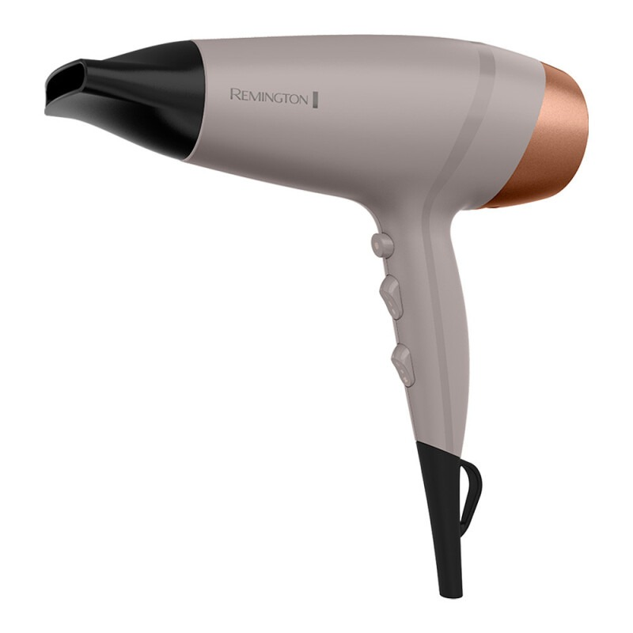
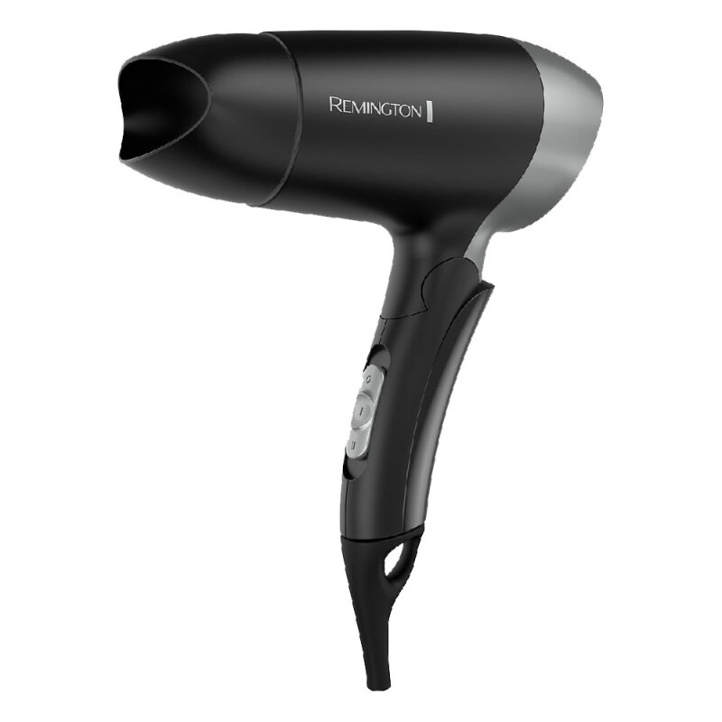
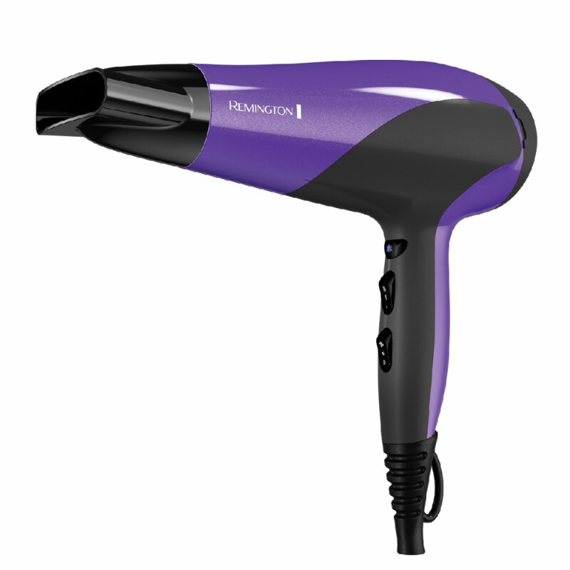
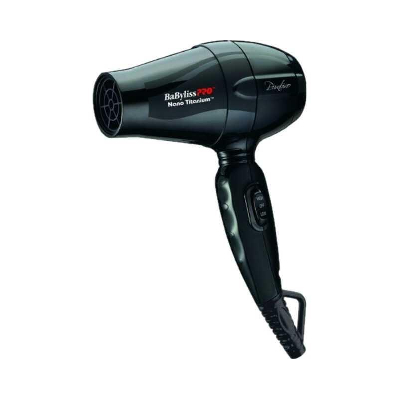
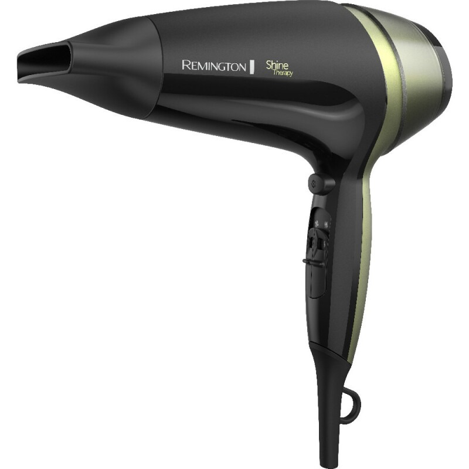

Remington · Modelo D26A
El modelo D26A de Remington está pensado para un uso práctico y funcional. Entre sus características destacan Climatización; Acondicionadores de aire; Ventiladores; Termocalefones y termoduchas.
| Modelo | D26A |
|---|---|
| Marca | Remington |
Fuente principal: https://www.ch.com.py/catalogo/secador-de-pelo-remington-d26a-collagen-y-biotin-therapy_20282_20282